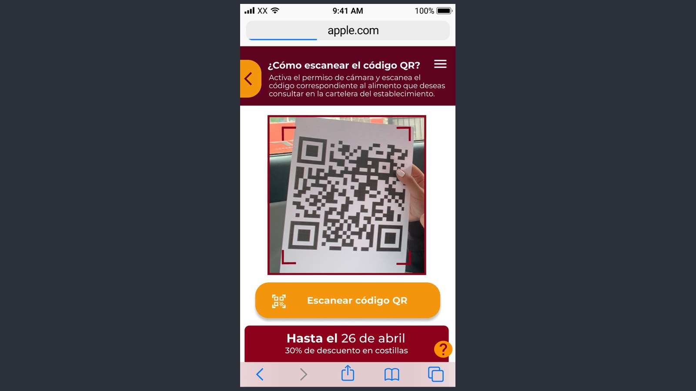
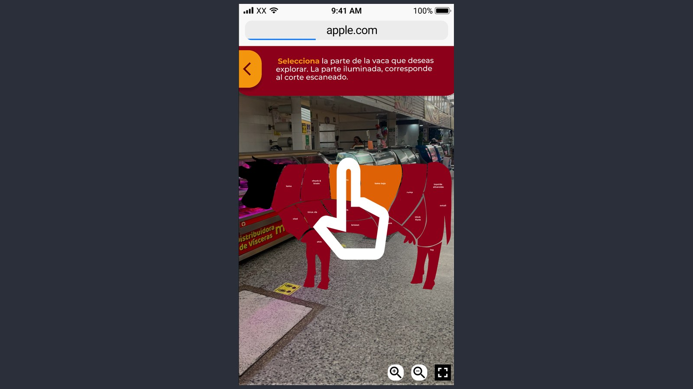
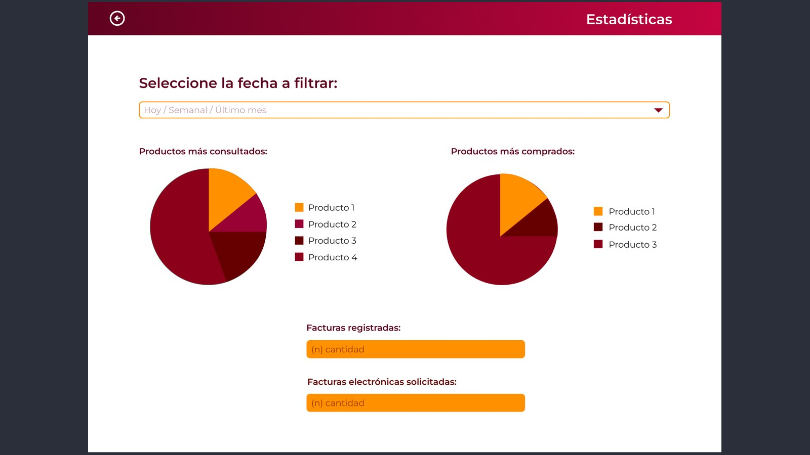

01 / CONTEXTOEl encargo
Cárnicos Quirigüá es un local de la plaza de mercado del Quirigüá, en Bogotá. Llegamos con un encargo abierto y salimos con dos problemas concretos que no habíamos anticipado.
02 / INVESTIGACIÓNIr a la plaza y preguntar
Hicimos encuestas y entrevistas en persona con los carniceros de la plaza de mercado del Quirigüá. De ahí salieron los dolores reales, que resultaron ser dos y de lados opuestos del mostrador.
Nadie sabe qué está comprando
La gente no tiene información sobre los cortes. No sabe cuál es cuál, para qué sirve cada uno, cuánto cuesta ni cuándo hay descuento. Termina llevando siempre lo mismo o preguntando, y preguntar frena la compra.
Sentir que te están dejando atrás
Los carniceros nos dijeron que se sienten rezagados frente a Carulla, Éxito y las grandes cadenas, que tienen plata para invertir en tecnología para sus clientes. El local de plaza compite con el mismo producto pero sin ninguna de esas herramientas.
Ese segundo hallazgo fue el que cambió el proyecto. No estábamos haciendo una app para clientes. Estábamos haciendo una herramienta que le da a un negocio pequeño algo que hoy solo tienen las cadenas grandes.
03 / DISEÑODos productos para dos usuarios
Escanear en vez de buscar
El cliente escanea el QR del corte que tiene enfrente. Elegimos escaneo y no un catálogo porque la carne está ahí, física, en el mostrador. Mandar a la persona a buscarla en una lista agrega un paso justo donde ya no hace falta.

La vaca en realidad aumentada
Después del escaneo, la app proyecta una vaca sobre la cámara con el corte escaneado iluminado. El resto de las partes quedan visibles y se pueden tocar para explorarlas.
Esto resuelve el problema de fondo. Un nombre de corte no le dice nada a quien no cocina, pero ver de qué parte del animal sale sí. Y como está sobre la cámara, la referencia queda anclada al lugar donde la persona está parada.

El panel del carnicero
El panel deja cambiar precios, inventario y descripciones sin depender de nadie. Si actualizar un precio requiere llamar a alguien, el sistema se abandona en dos semanas.
Pero la parte que responde al dolor real es la de estadísticas: productos más consultados, productos más comprados y facturación. Los carniceros nos dijeron que se sienten atrás de las grandes cadenas, y una de las cosas que esas cadenas tienen y ellos no son datos sobre lo que hace su clientela. Saber qué corte se consulta mucho pero se compra poco es información que hoy no tienen.

El prototipo de media fidelidad tiene más de 30 pantallas entre las dos piezas.
04 / HANDOFFSistema de componentes
Documenté el sistema de componentes y la guía de estilos completa para que el equipo de desarrollo pudiera trabajar sin volver a preguntar cada detalle.
[Si tienes captura del sistema de componentes, ponla acá. Es de las cosas que más miran en roles de producto.]
05 / SIGUIENTE PASODe prototipo a producto
Se quedó en prototipo. Nunca pasó a producto real, y ese salto es donde estaban las preguntas más difíciles: qué tan bien funciona el escaneo con la luz y el ruido visual de una plaza de mercado, si el carnicero de verdad mantiene la información actualizada cuando tiene fila, y si el cliente saca el celular estando de pie frente al mostrador.
Nada de eso se responde en Figma. El siguiente paso natural es una prueba en el local con carne real, luz de plaza y clientes que nunca han visto la app, midiendo cuántos completan el escaneo sin ayuda.
Contacto
Estoy buscando práctica profesional y roles junior en diseño de interacción, UX, sistemas de juego y QA. Bogotá o remoto.
Siguiente proyecto